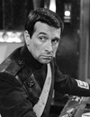
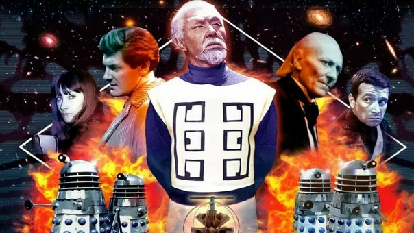
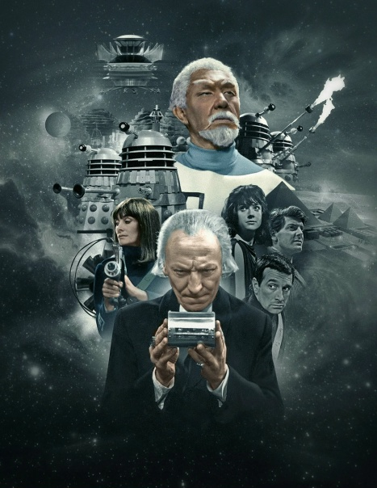
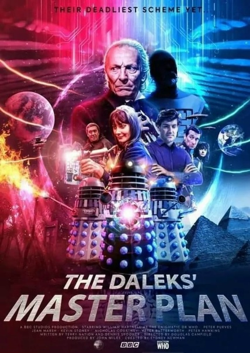
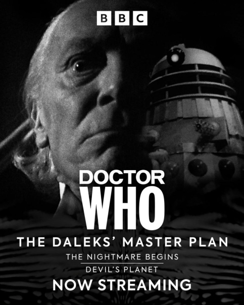

Эра Первого Доктора (3 сезон)
<<< НАЗАД ||| 4. Генеральный план далеков ||| ДАЛЬШЕ >>>
+ Найденные и отреставрированные (эпизоды 1, 3) + Реконструкция (эпизоды 4, 6-9, 11, 12) LCRecon Субтитры: Русские {1-3 Антон Линевский, 4-12 разные переводчики} + Английские |  |
|---|---|
+ Найденные и отреставрированные (эпизоды 1, 3) + Фанатская реконструкция (эп. 4, 6, 8, 9, 11, 12) Джош Снэйрс + Реконструкция (эпизод 7) LCRecon Субтитры: отсутствуют | |
+ Найденные и отреставрированные (эпизоды 1, 3) + Фанатская CGI анимация (эп. 4, 6-9, 11, 12) WhoRecons Субтитры: отсутствуют | |
+ Найденные и отреставрированные (эпизоды 1, 3) + Фанатская AI-реконструкция (эп.4, 6-9, 11, 12) Йен Ливайн Субтитры: отсутствуют |
эп.1 - Кошмар начинается (ESE Productions) | эп.1 - Кошмар начинается (Йен Ливайн) |
эп.1 - Кошмар начинается (Джош Снэйрс) | эп.1 - Кошмар начинается (LCRecon) |
эп.1 - Кошмар начинается (WhoRecons) | эп.3 - Планета дьявола (Йен Ливайн) |
эп.3 - Планета дьявола (Джош Снэйрс) | эп.3 - Планета дьявола (LCRecon) |
эп.3 - Планета дьявола (WhoRecons) | эп.4 - Предатели (Йен Ливайн) |
эп.6 - Короны Солнца (Йен Ливайн) | эп.7 - Пир Стивена (Adam Bullock) |
эп.7-1 - Пир Стивена (Dalek Prime Productions) | эп.7-2 - Пир Стивена (Dalek Prime Productions) |
эп.11 - Покинутая планета (Dalek Prime Productions) | эп.12 - Разрушение времени (Dalek Prime Productions) |
эп.1 - Кошмар начинается. Короткая анимация (Timepiece Animation) | эп.1 - Кошмар начинается. Отрывок: Брет Вион и Курт Гантри (JanjyGiggins) |
эп.1 - Кошмар начинается. Отрывок: Доктор возле ТАРДИС (Ian Levine) | эп.1 - Кошмар начинается. Отрывок: Доктор приближается к городу (Josh Snares, Lucy Crewe) |
эп.6 - Короны Солнца. Короткая анимация (Timepiece Animation) | эп.6 - Короны Солнца. Отрывок: Некомпетентность Мавика Чена (Vivian Jefferies) |
эп.6 - Короны Солнца. Отрывок: Речь Мавика Чена (Ian Levine) | эп.7 - Пир Стивена. Финальная сцена (Finnholm) |
эп.7 - Пир Стивена. Финальная сцена (Garrett Gilchrist) | эп.8 - Вулкан. Короткая анимация (Timepiece Animation) |
13 ноября 1965 - 29 января 1966
12 эпизодов по 25 мин.
| 1. Кошмар начинается 2. День апокалипсиса 3. Планета дьявола 4. Предатели 5. Встречный заговор 6. Корона Солнца 7. Торжество Стивена 8. Вулкан 9. Золотая смерть 10. Переключатель побега 11. Потерянная планета 12. Разрушение времени | Все эпизоды утеряны * 5-й и 10-й эпизоды найдены в 1983 году - 16mm t/r * 2-й эпизод найден в 2004 году - 16mm t/r * 1-й и 3-й эпизоды найдены в 2026 году - 16mm t/r * На утерянные эпизоды имеется реконструкция |
|---|
 |  | помощник |  помощник |
«Генеральный план далеков» раскрывает масштабный замысел далеков: с помощью Деструктора времени они хотят подчинить всю вселенную. Доктор и спутники вступают в противостояние с далеками и их союзником — предателем Мавиком Ченом, срывая коварные расчёты врага. В ходе погони по планетам и эпохам герои сталкиваются с тяжёлыми потерями, а кульминация происходит на Кимбеле — там Доктор активирует Деструктор, уничтожая угрозу вместе с базой далеков. Серия подчёркивает цену борьбы со злом и показывает далеков как самую разрушительную силу космоса.
 VHS (5 и 10 эпизоды) 6 июля 1992 |  LC recon (реконструкции) декабрь 2003 * Версия в нашей группе |  DVD (2, 5 и 10 эпизоды) 1 ноября 2004 * Версия в нашей группе |
|---|







